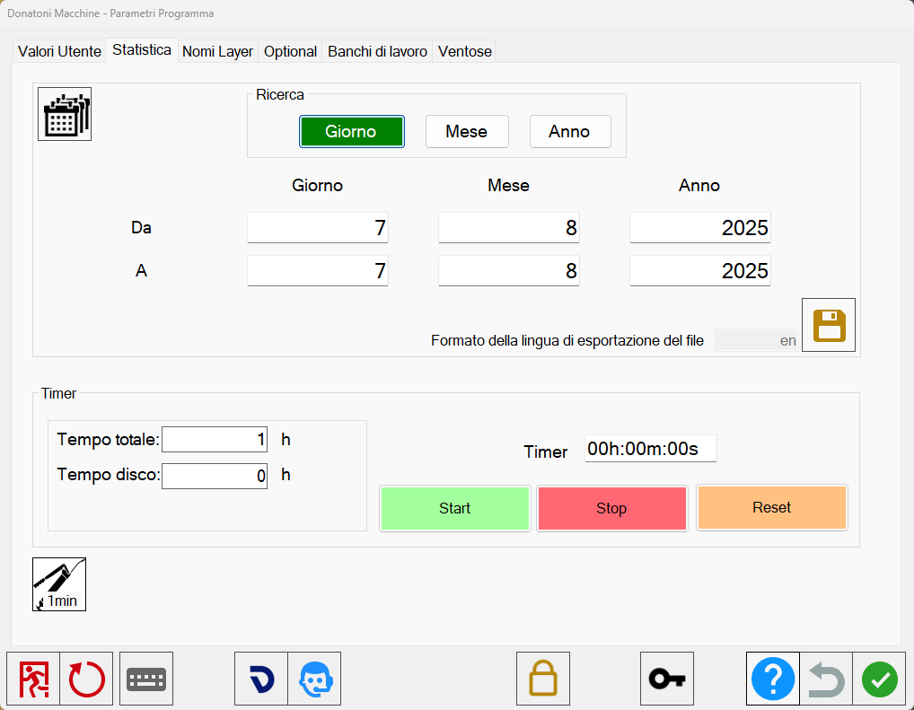
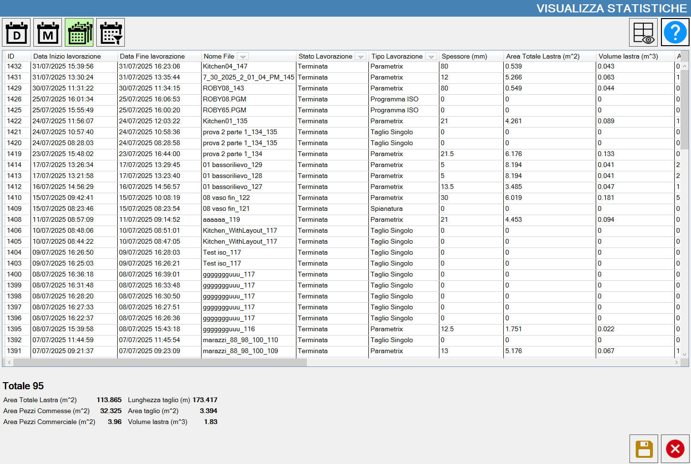
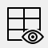
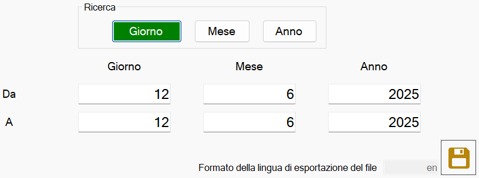
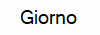
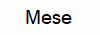
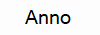
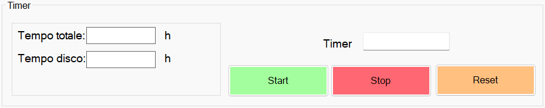
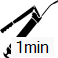

Tramite questa finestra è possibile visualizzare le statistiche delle lavorazioni eseguite dalla macchina.
Le statistiche comprendono anche lavorazioni di tipo taglio singolo, scavo, spianatura ed esecuzione ISO.

Statistiche a video
Tramite il pulsante in alto a sinistra è possibile accedere alla finestra di statistiche a video.
 | Statistiche a video |
Si apre quindi una finestra che mostra alcune informazioni legate alle lavorazioni svolte in macchina.

Ogni voce dell’elenco corrisponde ai dati relativi di una singola lavorazione.
In fondo alla pagina sono viene invece presentato un riepilogo delle informazioni importanti di tutte le lavorazioni visualizzate.
Pulsanti
 | Statistiche giornaliere |
 | Statistiche mensili |
 | Statistiche totali |
Intervallo di tempo impostabile | |
 | Colonne da visualizzare |
Salva statistiche |
Statistiche per ogni macchina (Opzionale)
Per la versione di Parametrix in modalità ufficio, è possibile connettersi a più macchine, e visualizzare le statistiche di ciascuna di esse.
Sulla sezione di sinistra vengono visualizzate tutte le macchine connesse al dispositivo.

Ricerca
Questa funzione permette di effettuare una ricerca delle statistiche all’interno di un arco temporale a scelta.

L’operatore può inserire la data di inizio e di fine per delimitare l’intervallo temporale di interesse.
È possibile stabilire la precisione della ricerca utilizzando i pulsanti.
 | Ricerca per giorno |
 | Ricerca per mese |
 | Ricerca per anno |
Per esportare le statistiche, usare il pulsante:
Salva statistiche |
Timer
In questa sezione è possibile gestire i timer della macchina.

Utilizzando i seguenti pulsanti, l’operatore è in grado di gestire in modo manuale un timer che possa tenere traccia del tempo trascorso.
Avvia timer | |
 | Interrompi timer |
 | Azzera timer |
Nella sezione di sinistra sono invece presenti informazioni riguardanti il tempo di utilizzo della macchina e degli strumenti montati.
Tempo totale | Indica il tempo totale di lavoro della macchina. |
Tempo disco | Mostra il tempo di utilizzo del disco. |
Grasso
Per avviare il grassaggio automatico della macchina, utilizzare il seguente pulsante:
 | Avvio ciclo grasso |